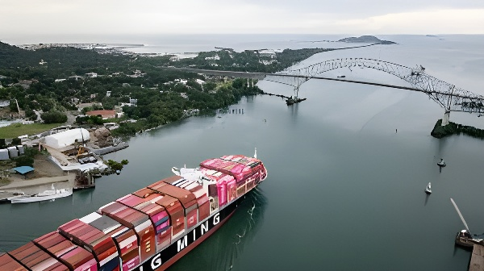

Depuis début 2025, la présence d'entreprises liées à Hong Kong aux deux entrées du Canal de Panama est devenue l'un des principaux points de friction entre Washington et Pékin. Derrière la controverse sur Hutchison Ports, c'est la question du contrôle des infrastructures stratégiques mondiales — et de la redéfinition de la mondialisation — qui se joue.
Le Canal de Panama, inauguré en 1914 et rétrocédé au Panama en 1999, constitue l'une des artères commerciales les plus stratégiques de la planète. Il relie les océans Atlantique et Pacifique sur 80 kilomètres et permet d'éviter le contournement du cap Horn. Quelque 14 000 navires y transitent chaque année, transportant près de 5 % du commerce maritime mondial, notamment des conteneurs, des céréales, du pétrole raffiné et des véhicules.
Dès 1997, le groupe hongkongais Hutchison Whampoa — rebaptisé Hutchison Ports — obtient des concessions d'exploitation des ports de Balboa (côté Pacifique) et de Cristóbal (côté Atlantique), les deux terminaux aux extrémités du Canal. Ces contrats de 25 ans, renouvelables, sont accordés par le gouvernement panaméen dans le cadre de la privatisation partielle de la gestion portuaire qui suit la rétrocession du Canal.
Hutchison Ports est une filiale du groupe CK Hutchison Holdings, fondé par le milliardaire hongkongais Li Ka-shing. Le groupe est techniquement une entreprise privée enregistrée aux Îles Caïmans, avec un siège social à Hong Kong. Il gère une cinquantaine de ports dans le monde entier, dont des installations au Royaume-Uni, en Allemagne, aux Pays-Bas, en Égypte ou en Australie.
La question centrale, agitée depuis des années à Washington mais portée au premier plan par l'administration Trump dès janvier 2025, est la suivante : Hutchison Ports est-elle un vecteur d'influence de Pékin, ou une entreprise privée dont les activités doivent être dissociées de la politique de la République populaire de Chine ? La distinction est devenue plus difficile à maintenir depuis la loi sur la sécurité nationale de 2020 à Hong Kong, qui a formellement assujetti la région administrative spéciale à l'autorité du Parti communiste chinois.
Donald Trump, lors de son discours d'investiture, affirme que les États-Unis « récupéreront » le Canal de Panama, accusant la Chine de le « gérer ». La déclaration provoque une onde de choc diplomatique.
Le Sénat américain adopte une résolution non contraignante demandant une enquête sur la présence de Hutchison Ports au Canal. Le Pentagone publie un rapport classifié sur les risques liés aux infrastructures portuaires chinoises.
CK Hutchison annonce un accord préliminaire pour céder ses activités portuaires mondiales — dont Balboa et Cristóbal — à un consortium mené par BlackRock pour environ 22 milliards de dollars. L'annonce est perçue à Washington comme une victoire diplomatique.
Pékin réagit vigoureusement : les autorités chinoises demandent l'examen de la transaction au titre de la réglementation sur les actifs stratégiques. L'accord est suspendu.
Le gouvernement panaméen du président Mulino annonce l'ouverture d'un audit indépendant des concessions de Hutchison Ports, sous pression conjointe américaine et nationale.
L'audit panaméen conclut à des irrégularités dans le renouvellement des contrats de 2021. Le gouvernement annonce l'intention de ne pas renouveler les concessions à leur échéance.
Situation toujours en suspens : Hutchison Ports opère encore les deux terminaux. Les négociations entre BlackRock, Pékin et Panama City se poursuivent. L'issue reste incertaine.
L'affaire Hutchison n'est pas isolée. Elle s'inscrit dans une compétition mondiale pour le contrôle des infrastructures stratégiques — ports, câbles sous-marins, réseaux 5G — que se livrent les États-Unis et la Chine depuis le milieu des années 2010. Washington a développé une doctrine de « dérisquage » (de-risking) selon laquelle la présence d'opérateurs liés à Pékin sur des nœuds logistiques critiques représente un risque sécuritaire inacceptable, indépendamment de leur statut juridique.
Pour les États-Unis, les ports de Balboa et Cristóbal occupent une position exceptionnellement sensible : ils encadrent littéralement le passage obligé entre le Pacifique et l'Atlantique. En cas de tension militaire dans le détroit de Taïwan ou en mer de Chine méridionale, le Canal représente une voie de transit indispensable pour la marine américaine. L'hypothèse — même infime — qu'un opérateur lié à Pékin pourrait ralentir, inspecter ou perturber ce transit est jugée inacceptable par le Pentagone.
Pour le gouvernement panaméen, l'affaire est politiquement délicate. Le Canal représente environ 7 % du PIB panaméen et son image de neutralité souveraine est fondamentale pour l'économie du pays. Le Panama n'a aucun intérêt à devenir le théâtre d'une confrontation sino-américaine.
Le président José Raúl Mulino, élu en 2024, a adopté une ligne pragmatique : réaffirmer sans ambiguïté la souveraineté panaméenne sur le Canal, tout en procédant à l'audit des concessions pour reprendre la main sur la situation. Panama s'est rapproché discrètement de Washington — rompant en début 2025 ses accords avec la Chine dans le cadre des Nouvelles Routes de la soie — sans pour autant provoquer ouvertement Pékin, son premier partenaire commercial.
| Acteur | Position | Objectif principal |
|---|---|---|
| États-Unis | Exiger la fin de la présence Hutchison | Sécuriser le passage interocéanique |
| Chine / Pékin | Bloquer toute cession jugée contrainte | Préserver l'influence logistique mondiale |
| Panama | Souveraineté et neutralité | Éviter la dépendance à un seul pôle |
| CK Hutchison | Vendre si conditions favorables | Sécuriser sa valeur actionnariale |
| BlackRock | Acquéreur potentiel | Portefeuille d'infrastructures mondiales |
« Le Canal de Panama est panaméen et le restera. Ni les États-Unis, ni la Chine ne le gèrent. »
— José Raúl Mulino, président du Panama, janvier 2025« Les États-Unis ne laisseront pas la Chine s'emparer de cette artère vitale pour notre commerce et notre défense. »
— Donald Trump, discours d'investiture, 20 janvier 2025L'affaire du Canal illustre un phénomène plus large. Hutchison Ports opère des terminaux au Royaume-Uni (Felixstowe, le plus grand port à conteneurs britannique), en Allemagne (Hambourg), aux Pays-Bas (Rotterdam) et en Australie. Dans chacun de ces pays, des débats similaires ont émergé sur l'opportunité de maintenir des opérateurs liés à Pékin sur des infrastructures critiques.
L'Australie a légiféré en 2021 pour permettre au gouvernement fédéral d'annuler des contrats de concession jugés contraires à l'intérêt national, ciblant implicitement les accords signés par certains États avec des entreprises chinoises. Le Royaume-Uni a, de son côté, engagé une revue de sécurité des contrats portuaires. L'ère de la mondialisation désidéologisée — où l'origine du capital importait peu — semble bel et bien révolue.
L'affaire Hutchison Ports au Canal de Panama illustre une transformation profonde de l'ordre économique mondial : les infrastructures stratégiques ne sont plus seulement des actifs commerciaux, mais des leviers de puissance dans une compétition géopolitique ouverte. Pour le Panama, petit État souverain pris en étau entre deux superpuissances, l'enjeu est existentiel : préserver la neutralité du Canal tout en tenant à distance des rivalités qui le dépassent. Pour le reste du monde, cette affaire signe la fin d'une certaine innocence de la mondialisation — celle où un port était simplement un port.
Desde comienzos de 2025, la presencia de empresas vinculadas a Hong Kong en los dos extremos del Canal de Panamá se ha convertido en uno de los principales focos de tensión entre Washington y Pekín. Detrás de la controversia sobre Hutchison Ports, se debate el control de las infraestructuras estratégicas mundiales y la redefinición de la globalización.
El Canal de Panamá, inaugurado en 1914 y devuelto a Panamá en 1999, es una de las arterias comerciales más estratégicas del planeta. Conecta los océanos Atlántico y Pacífico a lo largo de 80 kilómetros y permite evitar el rodeo por el cabo de Hornos. Unos 14 000 buques transitan por él cada año, transportando cerca del 5 % del comercio marítimo mundial: contenedores, cereales, petróleo refinado y vehículos.
En 1997, el grupo hongkonés Hutchison Whampoa —rebautizado Hutchison Ports— obtiene las concesiones de explotación de los puertos de Balboa (lado Pacífico) y Cristóbal (lado Atlántico), los dos terminales en los extremos del Canal. Estos contratos de 25 años, renovables, fueron otorgados por el gobierno panameño en el marco de la privatización parcial de la gestión portuaria tras la devolución del Canal.
Hutchison Ports es filial del grupo CK Hutchison Holdings, fundado por el multimillonario hongkonés Li Ka-shing. El grupo es técnicamente una empresa privada registrada en las Islas Caimán con sede en Hong Kong. Gestiona unos cincuenta puertos en todo el mundo, incluidas instalaciones en el Reino Unido, Alemania, Países Bajos, Egipto y Australia.
La pregunta central, debatida en Washington desde hace años pero llevada a primer plano por la administración Trump desde enero de 2025, es la siguiente: ¿es Hutchison Ports un vector de influencia de Pekín o una empresa privada cuyas actividades deben disociarse de la política de la República Popular China? Esta distinción se ha vuelto más difícil de sostener desde la Ley de Seguridad Nacional de 2020 en Hong Kong, que sometió formalmente la región a la autoridad del Partido Comunista Chino.
Donald Trump afirma que Estados Unidos "recuperará" el Canal, acusando a China de "gestionarlo". La declaración desencadena una ola de reacciones diplomáticas.
El Senado estadounidense aprueba una resolución no vinculante pidiendo una investigación sobre Hutchison Ports. El Pentágono publica un informe clasificado sobre los riesgos.
CK Hutchison anuncia un acuerdo preliminar para ceder sus activos portuarios globales —incluidos Balboa y Cristóbal— a un consorcio liderado por BlackRock por unos 22 000 millones de dólares.
Pekín reacciona con energía: las autoridades chinas solicitan la revisión de la transacción en virtud de la normativa sobre activos estratégicos. El acuerdo queda suspendido.
El gobierno panameño del presidente Mulino anuncia una auditoría independiente de las concesiones de Hutchison Ports bajo presión conjunta estadounidense y nacional.
La auditoría panameña detecta irregularidades en la renovación de los contratos de 2021. El gobierno anuncia que no renovará las concesiones al vencimiento.
Situación aún en suspenso: Hutchison Ports sigue operando ambos terminales. Las negociaciones entre BlackRock, Pekín y la Ciudad de Panamá continúan.
El asunto Hutchison no es aislado. Se inscribe en una competición mundial por el control de infraestructuras estratégicas —puertos, cables submarinos, redes 5G— que enfrentan a Estados Unidos y China desde mediados de los años 2010. Washington ha desarrollado una doctrina de «des-riesgo» (de-risking) según la cual la presencia de operadores vinculados a Pekín en nodos logísticos críticos representa un riesgo de seguridad inaceptable, independientemente de su estatuto jurídico.
Para Estados Unidos, los puertos de Balboa y Cristóbal ocupan una posición excepcionalmente sensible: encuadran literalmente el paso obligado entre el Pacífico y el Atlántico. En caso de tensión militar en el estrecho de Taiwán, el Canal representa una vía de tránsito indispensable para la marina estadounidense. La hipótesis —aunque remota— de que un operador vinculado a Pekín pudiera ralentizar o perturbar ese tránsito es considerada inaceptable por el Pentágono.
Para el gobierno panameño, el asunto es políticamente delicado. El Canal representa cerca del 7 % del PIB panameño y su imagen de neutralidad soberana es fundamental para la economía del país. Panamá no tiene ningún interés en convertirse en escenario de una confrontación sino-americana.
El presidente José Raúl Mulino adoptó una línea pragmática: reafirmar sin ambigüedad la soberanía panameña sobre el Canal, al tiempo que procede a la auditoría de las concesiones. Panamá se ha acercado discretamente a Washington —rompiendo a principios de 2025 sus acuerdos con China en el marco de las Nuevas Rutas de la Seda— sin provocar abiertamente a Pekín, su principal socio comercial.
| Actor | Posición | Objetivo principal |
|---|---|---|
| Estados Unidos | Exigir el fin de la presencia Hutchison | Asegurar el paso interoceánico |
| China / Pekín | Bloquear toda cesión considerada forzada | Preservar la influencia logística global |
| Panamá | Soberanía y neutralidad | Evitar la dependencia de un solo polo |
| CK Hutchison | Vender si las condiciones son favorables | Asegurar el valor accionarial |
| BlackRock | Comprador potencial | Cartera de infraestructuras mundiales |
« El Canal de Panamá es panameño y lo seguirá siendo. Ni Estados Unidos ni China lo administran. »
— José Raúl Mulino, presidente de Panamá, enero de 2025« Estados Unidos no dejará que China se apodere de esta arteria vital para nuestro comercio y nuestra defensa. »
— Donald Trump, discurso de investidura, 20 de enero de 2025El asunto del Canal ilustra un fenómeno más amplio. Hutchison Ports opera terminales en el Reino Unido (Felixstowe, el mayor puerto de contenedores británico), en Alemania (Hamburgo), en los Países Bajos (Róterdam) y en Australia. En cada uno de estos países han surgido debates similares sobre la conveniencia de mantener operadores vinculados a Pekín en infraestructuras críticas.
Australia legisló en 2021 para permitir al gobierno federal anular contratos de concesión contrarios al interés nacional, apuntando implícitamente a los acuerdos firmados con empresas chinas. El Reino Unido emprendió por su parte una revisión de seguridad de los contratos portuarios. La era de la globalización desideologizada —en la que el origen del capital importaba poco— parece definitivamente clausurada.
El asunto Hutchison Ports en el Canal de Panamá revela una transformación profunda del orden económico mundial: las infraestructuras estratégicas ya no son simples activos comerciales, sino palancas de poder en una competición geopolítica abierta. Para Panamá, pequeño Estado soberano atrapado entre dos superpotencias, el reto es existencial: preservar la neutralidad del Canal frente a rivalidades que lo superan. Para el resto del mundo, este asunto marca el fin de una cierta ingenuidad de la globalización — aquella en que un puerto era simplemente un puerto.